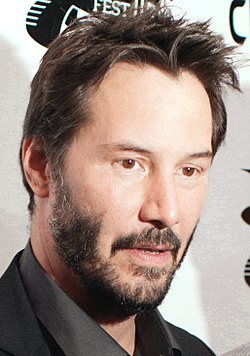

Биография
Рийвс е роден в Бейрут, Ливан. Той е син на Патриша Бонд, която е дизайнер на костюми, и Самюел Ноуин Рийвс
младши – геолог. Майката на Рийвс е англичанка, а баща му е американец с хавайски, китайски и английски
произход. Патриша Бонд работи в Бейрут, когато среща бъдещия си съпруг. Бащата на Рийвс работи като
неквалифициран работник, но бива пратен в Хавайския затвор заради продажба на хероин. Той изоставя своята
съпруга и семейство, когато Киану е на 3 години и Рийвс изобщо не поддържа отношения с него. Рийвс е кръстен
на своя чичо – Хенри Киану Рийвс. Киану е хавайска дума, която означава: „хладен лек вятър над планините“.
Когато Рийвс пристига за първи път в Холивуд, неговият агент смятал, че първото му име е твърде екзотично,
затова по време на ранната си кариера понякога той се подписвал като К. Ч. Рийвс.
Рийвс има една биологична сестра на име Ким, родена през 1966 година в Австралия, на която е била поставена
диагноза левкемия в началото на 90-те години. Освен това, от страна на майка си, той има и полусестра на име
Карина Милър, родена през 1976 в Торонто, а по линия на баща си друга полусестра, на име Емма Роуз Рийвс,
родена през 1980 в Хавай.
Рийвс преживява неспокойно детство, като се мести на различни места по целия свят и живее с многобройни
втори бащи. Неговите родители се развеждат през 1966. Майка му става дизайнер на костюми и се мести със
семейството първо в Австралия и после в Ню Йорк. Там тя среща Пол Арън – режисьор в Бродуей и Холивуд, за
когото се омъжва. Двойката се мести в Торонто, но се развежда през 1971. По-късно, през 1976, майката на
Рийвс се омъжва за организатора на рок концерти Робърт Милър, но се развежда и с него през 1980. Четвъртият
ѝ съпруг Джак Бонд е фризьор. Техният брак се разпада през 1994 година. Баби и дядовци, както и детегледачки
отглеждат Рийвс и сестрите му.
Киану расте главно в Торонто, Канада. В продължение на пет години той посещава четири различни гимназии,
включително и училище за изкуства, от което той по-късно е изключен. Полушеговито Рийвс казва, че е бил
изгонен, „защото аз бях палав и тичах нагоре-надолу много. Просто бях малко по-буен и си отварях
устата прекалено често. Общо взето не бях най-добре „смазаната“ машина в училище. Мисля, че просто им се
пречках.“
Рийвс изпъквал повече в хокея, отколкото в науките, тъй като неговото образователно развитие било променено
заради дислексия. Той е бил успешен вратар в една от гимназиите, които е посещавал. Неговият отбор му дава
прякора Стената и го определя като най-ценният играч. Рийвс споделя, че мечтаел да стане олимпийски играч по
хокей за Канада. След като напуска тази гимназия, той посещава частно училище, което му позволява да
придобие образование, докато работи като актьор. По-късно той напуска и никога не получава своята
гимназиална диплома.
Личен живот
Рийвс никога не е бил женен. През декември 1999, приятелката му Дженифър Сюм ражда мъртвородена дъщеря, която
е била кръстена Ава Арчър Сюм-Рийвс. През април 2001 г. Сюм загива при автомобилна катастрофа. Тя е
погребана до дъщеря им в Лос Анджелис, Калифорния.
Около 2018 Кеану Рийвс започва да живее с визуалната артистка Александра Грант.
За близо цяло десетилетие, през което Рийвс се издига в ранг на звезда, той предпочита да живее в домове под
наем и е дългогодишен обитател на „Шато Мармонт“. Рийвс купува първата си къща в покрайнините на Холивуд до
Лос Анджелис през 2003 и също притежава апартамент на Сентръл Парк в Ню Йорк.
Въпреки че е роден в Ливан, Рийвс не е ливански гражданин, защото родителите му не са ливанци. Освен това
той е натурализиран канадски гражданин, който също има американско и британско гражданство.